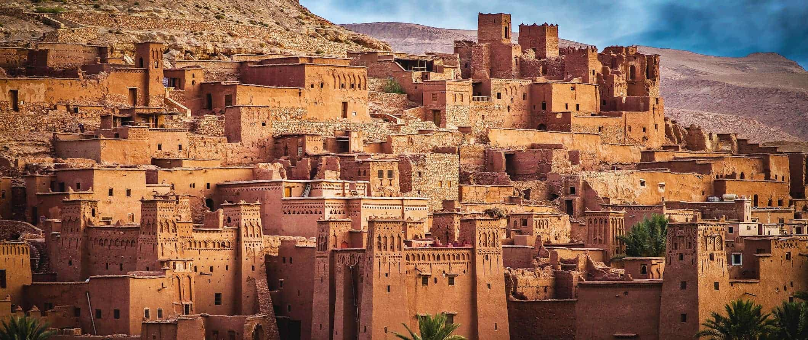

MOROCCO

Morocco has four imperial cities: Marrakech, Fes, Meknes and Rabat. Rabat is the current capital city. Although a modern city at first glance, it has several interesting historical attractions, such as the Kasbah of the Oudaias, the old medina and the Hassan Tower. The gleaming Royal Mausoleum is also well worth a visit.
Known as the Red City, Marrakech is famous for its old medina, numerous souks, ancient palaces like Badi Palace and Bahia Palace, the striking Koutoubia Mosque, the energetic Djemaa el-Fna and the Saadian Tombs. The former capital of Fes boasts plenty of stunning architecture, though it is perhaps best known for its large tanneries and for being home to one of the oldest universities in the world. Meknes has one of the most impressive monumental gates in all of Morocco – Bab el-Mansour – whilst horse-drawn carriages make a great way to explore this charming and relaxed imperial city.
Morocco has beaches along both the Mediterranean Sea and the Atlantic Ocean, with plenty of lovely spots to enjoy. Popular holiday spots with foreign visitors include Tangier and Agadir, while Asilah attracts mainly locals and Spanish visitors. Although fairly under-visited by international tourists, places like El Jadida, Oualidia and El Jebha see significant numbers of domestic tourists during the summer months. The most popular beaches typically have great facilities within easy reach, whilst some destinations, such as Essaouria, are perfect for lovers of watersports.
